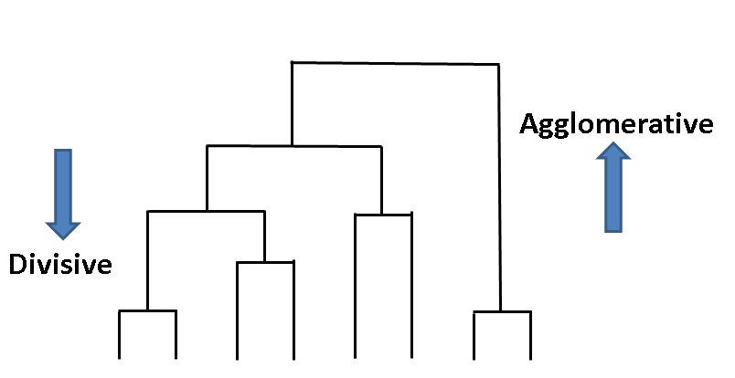

Fig. 2 — Taxonomie complète des méthodes de clustering : Partitionnement, Hiérarchiques (Agglomératif/Divisif) et Densité
Le clustering (ou regroupement non supervisé) est une technique fondamentale du Data Mining qui consiste à partitionner un ensemble de données en groupes homogènes appelés clusters, de sorte que les objets à l’intérieur d’un même cluster soient similaires entre eux et dissemblables des objets des autres clusters. Contrairement à la classification supervisée, le clustering n’utilise pas d’étiquettes préalablement connues : il découvre la structure latente des données.
Le clustering trouve des applications dans de très nombreux domaines : segmentation client en marketing, détection d’anomalies en cybersécurité, groupement de documents en TAL, analyse de gènes en bioinformatique, compression d’images, et bien sûr l’analyse épidémiologique illustrée dans ce projet.
| Mesure | Formule | Cas d’usage |
|---|---|---|
| Euclidienne | √∑(xᵢ − yᵢ)² | Données continues, clusters sphériques |
| Manhattan | ∑|xᵢ − yᵢ| | Données avec outliers, grilles |
| Cosinus | 1 − (x·y)/(‖x‖‖y‖) | Texte, données de haute dimension |
| Hamming | nb. de positions différentes | Données binaires, chaînes |
| Minkowski | (∑|xᵢ − yᵢ|ᵖ)^(1/p) | Généralisation (p=1→Manhattan, p=2→Euclidienne) |
| Mahalanobis | √((x−μ)ᵀΣ⁻¹(x−μ)) | Données corrélées, ellipsoïdes |
Les méthodes de partitionnement divisent les données en k groupes non-hiérarchiques, où k est un paramètre fixé à l’avance. Ces méthodes sont généralement itératives et optimisent une fonction objectif (souvent la somme des distances internes aux clusters).
Algorithme itératif qui assigne chaque point au centroïde le plus proche, puis met à jour les centroïdes comme la moyenne des points assignés.
Complexité :O(n·k·t·d) — n points, k clusters, t itérations, d dimensionsVariante de K-Means où le représentant de chaque cluster est un point réel des données (medoïde) plutôt qu’une moyenne. Beaucoup plus robuste aux outliers.
Complexité :O(k(n−k)²) — plus lent que K-MeansClustering Large Applications based on RANdomized Search. Version améliorée de PAM utilisant un échantillonnage aléatoire pour accélérer la recherche sur les grands jeux de données.
Complexité :O(n²)Les méthodes hiérarchiques construisent une structure arborescente (dendrogramme) représentant les relations d’emboîtement entre clusters. Elles ne nécessitent pas de spécifier k à l’avance : l’utilisateur découpe le dendrogramme au niveau souhaité après coup.

Approche Bottom-Up : démarre avec chaque point comme son propre cluster, puis fusionne itérativement les deux clusters les plus proches. La méthode de liaison Ward minimise l’accroissement de la variance interne lors de chaque fusion.
Liaisons : Ward · Complete · Average · Single · CentroidO(n² log n)Approche Top-Down : démarre avec tous les points dans un seul cluster global, puis divise récursivement les clusters les moins cohésifs. Utilisé dans ce projet via cut_tree.
O(n²)Balanced Iterative Reducing and Clustering using Hierarchies. Construit un arbre CF (Clustering Feature) compact, puis applique un clustering sur ses feuilles. Conçu pour très grands datasets en mémoire limitée.
Complexité :O(n) — linéaire !
Clustering Using REpresentatives. Représente chaque cluster par plusieurs points (pas juste un centroïde), permettant de détecter des clusters de formes arbitraires et de gérer les outliers.
| Méthode | Distance entre clusters | Forme des clusters | Sensibilité aux outliers |
|---|---|---|---|
| Single (min) | Plus courte distance entre tout point de A et tout point de B | Allongée, chaînes | Très élevée |
| Complete (max) | Plus longue distance entre tout point de A et tout point de B | Compacte, sphérique | Modérée |
| Average | Moyenne de toutes les paires de distances | Intermédiaire | Faible |
| Ward | Accroissement de la variance interne | Sphérique, compacte | Faible |
| Centroid | Distance entre centroïdes des clusters | Intermédiaire | Modérée |
Les méthodes basées sur la densité définissent les clusters comme des régions de haute densité de points, séparées par des régions de faible densité. Leur atout majeur est de détecter des clusters de formes arbitraires et d’identifier automatiquement les outliers.
Définit deux paramètres : ε (rayon de voisinage) et MinPts (nombre minimum de voisins). Un point est core s’il a ≥ MinPts voisins dans son ε-voisinage. Les clusters sont les composantes connexes de core points.
O(n log n) avec index spatialExtension de DBSCAN qui gère les clusters de densités variables. Produit un graphe de réachtabilité permettant d’extraire des clusters à différents niveaux de densité.
DENsity-based CLUstEring. Basé sur l’estimation par noyaux (kernel density estimation). Définit les clusters comme des régions autour des maxima locaux de la fonction de densité estimée.
Ces méthodes supposent que les données ont été générées par un mélange de distributions probabilistes. Chaque cluster correspond à une composante du mélange. L’algorithme EM (Expectation-Maximization) est utilisé pour estimer les paramètres.
Modélise les données comme un mélange de k gaussiennes. Chaque point a une probabilité d’appartenance à chaque cluster (soft assignment). Les paramètres (μ, Σ, π) sont estimés par EM.
Avantages : clusters ellipsoïdaux, assignation douce, généralise K-Meanssklearn.mixture.GaussianMixture
K-Means est un cas particulier de GMM où toutes les gaussiennes ont la même covariance isotropique (sphérique) et l’assignation est dure (0 ou 1). En ce sens, GMM est une généralisation probabiliste de K-Means, permettant des clusters ellipsoïdaux et des frontières souples.
Le clustering spectral s’appuie sur les vecteurs propres (spectres) du Laplacien du graphe de similarité des données. Il est particulièrement efficace pour des structures de données complexes que les méthodes traditionnelles ne peuvent pas capturer.
L = D⁻½(D−W)D⁻½O(n³) — ne scale pas aux très grands datasetssklearn.cluster.SpectralClustering
| Algorithme | k requis ? | Forme clusters | Outliers | Scalabilité | Complexité |
|---|---|---|---|---|---|
| K-Means | Oui | Sphérique | Sensible | Très bonne | O(nkt) |
| K-Medoids | Oui | Sphérique | Robuste | Moyenne | O(k(n−k)²) |
| AGNES/Ward | Non | Sphérique | Modéré | Moyenne | O(n² log n) |
| DIANA | Non | Arbitraire | Modéré | Moyenne | O(n²) |
| BIRCH | Non | Sphérique | Bon | Très bonne | O(n) |
| DBSCAN | Non | Arbitraire | Excellent | Bonne | O(n log n) |
| OPTICS | Non | Arbitraire | Excellent | Bonne | O(n log n) |
| GMM | Oui | Ellipsoïdal | Modéré | Moyenne | O(nkt) |
| Spectral | Oui | Arbitraire | Variable | Faible | O(n³) |
Le dataset utilisé pour le projet K-Means provient de la plateforme Kaggle et modélise les centres d’intérêt des utilisateurs. Il s’agit d’un problème de segmentation comportementale : regrouper des utilisateurs selon leurs préférences déclarées.
| Caractéristique | Valeur |
|---|---|
| Nombre d’entrées | 6 340 utilisateurs |
| Nombre de colonnes | 219 (1 groupe + 1 total + 217 intérêts) |
| Colonne cible (non utilisée) | group : 4 groupes (C, I, P, R) |
| Distribution des groupes | I: 1 809 · P: 1 731 · C: 1 725 · R: 1 075 |
| Variables de features | 217 variables binaires (0/1) : interest1 à interest217 |
| Valeurs manquantes | NaN remplacés par 0 (intérêt absent) |
| Intérêt le plus populaire | interest215 : 4 944 personnes (78 %) |
| Intérêt le moins populaire | interest2 : 1 seule personne |

kaggle_Interests_group.csv n’est pas inclus dans ce dépôt pour des raisons de licence Kaggle. Téléchargez-le depuis la plateforme Kaggle et placez-le dans le dossier du notebook avant exécution.
L’exploration préliminaire du dataset révèle une forte disparité dans la popularité des intérêts : la grande majorité des 217 variables présentent très peu d’activations, tandis qu’une dizaine concentrent la quasi-totalité des intérêts.
# Chargement et nettoyage des données import numpy as np import pandas as pd from sklearn.cluster import KMeans from sklearn.decomposition import PCA import matplotlib.pyplot as plt import seaborn as sns data = pd.read_csv("kaggle_Interests_group.csv") data = data.fillna(0) # NaN → 0 : intérêt absent somme_interets = data.iloc[:, 2:].sum() groupes_par_interet = { col: data[data[col] == 1]['group'].value_counts().to_dict() for col in data.columns[2:] }


Une implémentation K-Means from scratch a été réalisée en Python natif pour comprendre les mécanismes internes de l’algorithme.
def kmeansTD(data, K, max_iters=100): # Initialisation aléatoire des centroïdes centroids = data[np.random.choice(data.shape[0], K, replace=False)] for _ in range(max_iters): # Distances et assignation distances = np.linalg.norm(data[:, np.newaxis] - centroids, axis=2) clusters = np.argmin(distances, axis=1) # Recalcul des centroïdes new_centroids = np.array([ data[clusters == k].mean(axis=0) for k in range(K) ]) if np.all(centroids == new_centroids): break centroids = new_centroids return clusters, centroids # Application K=5 + visualisation PCA K = 5 clusters, centroids = kmeansTD(data_for_clustering.values, K) data['cluster'] = clusters pca = PCA(n_components=2) data_pca = pca.fit_transform(data_for_clustering) centroids_pca = pca.transform(centroids) plt.figure(figsize=(12, 8)) sns.scatterplot(data=data, x='pca1', y='pca2', hue='cluster', palette='viridis', alpha=0.6) plt.scatter(centroids_pca[:, 0], centroids_pca[:, 1], s=300, c='red', marker='X', label='Centroids') plt.legend() plt.show()

from sklearn.cluster import KMeans kmeans = KMeans(n_clusters=3, random_state=42) data['cluster'] = kmeans.fit_predict(data_for_clustering) # Attribution des intérêts au cluster dominant interests_cluster_assignment = {} for interest in data_for_clustering.columns: mean_values = data.groupby('cluster')[interest].mean() interests_cluster_assignment[interest] = mean_values.idxmax() # Visualisation PCA pca = PCA(n_components=2) data_pca = pca.fit_transform(data_for_clustering) centroids_pca = pca.transform(kmeans.cluster_centers_) plt.figure(figsize=(12, 8)) sns.scatterplot(data=data, x='pca1', y='pca2', hue='cluster', palette='viridis', alpha=0.6) plt.scatter(centroids_pca[:, 0], centroids_pca[:, 1], s=300, c='red', marker='X', label='Centroids') plt.show()


| Configuration | K | Cohésion visuelle | Observation |
|---|---|---|---|
| Implémentation TD (custom) | 3 | Bonne | Clusters bien séparés, convergence rapide |
| Implémentation TD (custom) | 5 | Très bonne | Segmentation fine, centroïdes bien positionnés |
| Scikit-learn KMeans | 3 | Excellente | Séparation nette, K-Means++ plus stable |
| Scikit-learn KMeans | 5 | Excellente | 5 groupes cohérents, bonne couverture |
Le dataset compile les données épidémiologiques COVID-19 pour les 30 pays européens de l’UE et de l’EEE, publiées par l’ECDC. L’objectif est de regrouper les pays selon leurs profils épidémiques similaires sur la durée de la pandémie.

| Colonne | Type | Description |
|---|---|---|
dateRep | object → datetime | Date de rapport (DD/MM/YYYY) |
cases | float64 | Nouveaux cas quotidiens |
deaths | float64 | Décès quotidiens |
countriesAndTerritories | object | Nom du pays (30 pays) |
popData2020 | int64 | Population 2020 |
continentExp | object | Continent (tous : Europe) |

import pandas as pd from sklearn.preprocessing import MinMaxScaler # Alignement sur la plage temporelle commune à tous les pays data['dateRep'] = pd.to_datetime(data['dateRep'], format='%d/%m/%Y') start_dates = data.groupby('countriesAndTerritories')['dateRep'].min().max() end_dates = data.groupby('countriesAndTerritories')['dateRep'].max().min() aligned_data = data[(data['dateRep'] >= start_dates) & (data['dateRep'] <= end_dates)] # Plage commune : 2020-03-14 → 2022-10-12 # Normalisation Min-Max + agrégation par pays def normalize_column(column): scaler = MinMaxScaler() return scaler.fit_transform(column.values.reshape(-1, 1)).flatten() aligned_data['cases_normalized'] = normalize_column(aligned_data['cases']) aligned_data['deaths_normalized'] = normalize_column(aligned_data['deaths']) country_totals = aligned_data.groupby('countriesAndTerritories').agg({ 'cases_normalized' : 'sum', 'deaths_normalized': 'sum' }).reset_index() country_totals.columns = ['countriesAndTerritories', 'total_cases', 'total_deaths'] country_totals['cases_deaths_sum'] = country_totals['total_cases'] + country_totals['total_deaths']

[0, 1], mettant tous les pays sur un pied d’égalité.
from scipy.cluster.hierarchy import dendrogram, linkage, fcluster linkage_matrix = linkage(country_totals[['cases_deaths_sum']], method='ward') plt.figure(figsize=(15, 10)) dendrogram(linkage_matrix, labels=country_totals['countriesAndTerritories'].values) plt.title("Dendrogramme Bottom-Up (Ward)") plt.show() # Seuil automatique = moitié de la distance max seuil = linkage_matrix[:, 2].max() / 2 country_totals['cluster'] = fcluster(linkage_matrix, t=seuil, criterion='distance') # Clustering sur cas seuls et décès seuls for col, label in [('total_cases', 'cluster_cases'), ('total_deaths', 'cluster_deaths')]: lm = linkage(country_totals[[col]], method='ward') country_totals[label] = fcluster(lm, t=lm[:, 2].max() / 2, criterion='distance')
from scipy.cluster.hierarchy import cut_tree # Même matrice, lue de haut en bas plt.figure(figsize=(15, 10)) dendrogram(linkage_matrix, labels=country_totals['countriesAndTerritories'].values) plt.title("Dendrogramme Top-Down") plt.gca().xaxis.tick_top() plt.show() # Découpage en k=4 clusters country_totals['cluster'] = cut_tree(linkage_matrix, n_clusters=4).flatten() for c in country_totals['cluster'].unique(): pays = country_totals[country_totals['cluster'] == c]['countriesAndTerritories'].tolist() print(f"Cluster {c}: {pays}")
cut_tree.| Cluster type | Pays caractéristiques | Profil épidémique |
|---|---|---|
| Forte incidence | France, Allemagne, Italie | Grandes populations, pics élevés |
| Incidence modérée | Belgique, Pays-Bas, Espagne | Incidence élevée rapportée à la population |
| Faible incidence | Liechtenstein, Islande, Chypre | Très petites populations, courbes atypiques |
| Profil intermédiaire | Pologne, Roumanie, Hongrie | Vagues décalées, sous-déclaration initiale |
cases_deaths_sum accorde un poids égal aux cas et aux décès. Une pondération ou une normalisation séparée serait plus rigoureuse.
from sklearn.cluster import KMeans inertias = [] K_range = range(1, 11) for k in K_range: km = KMeans(n_clusters=k, random_state=42, n_init=10) km.fit(data_for_clustering) inertias.append(km.inertia_) plt.plot(K_range, inertias, marker='o') plt.xlabel('k') ; plt.ylabel('Inertie (WCSS)') plt.title('Méthode du coude') ; plt.show()
from sklearn.metrics import silhouette_score silhouette_scores = [] for k in range(2, 11): km = KMeans(n_clusters=k, random_state=42, n_init=10) labels = km.fit_predict(data_for_clustering) silhouette_scores.append(silhouette_score(data_for_clustering, labels)) plt.plot(range(2, 11), silhouette_scores, marker='s', color='darkorange') plt.title('Score de silhouette en fonction de k') ; plt.show() # Le k optimal correspond au maximum
| Méthode | Critère | Avantages | Limites |
|---|---|---|---|
| Elbow | Point d’inflexion inertie vs k | Simple, rapide | Subjectif |
| Silhouette | Maximum du score moyen | Objectif | Coûteux O(n²) |
| Gap Statistic | Écart vs distribution uniforme | Statistiquement fondé | Complexe |
| Davies-Bouldin | Minimum de l’index DB | Compacité & séparation | Favorise les sphères |
| Métrique | Formule | Optimum | Usage |
|---|---|---|---|
| Inertie (WCSS) | ∑ d(xᵢ, μCᵢ)² | Minimiser | Méthode du coude |
| Silhouette | (b−a)/max(a,b) | Max [−1, 1] | Qualité globale |
| Davies-Bouldin | mean(Rᵢ) | Minimiser ≥ 0 | Compacité & séparation |
| Calinski-Harabasz | BSS/WSS × (n−k)/(k−1) | Maximiser | Rapport inter/intra |
| Dunn Index | min(d_inter)/max(d_intra) | Maximiser | Clusters compacts et séparés |
auto-sklearn ou pycaret pour automatiser la sélection d’algorithmescikit-learn · scipy.cluster · hdbscan · umap-learn · yellowbrick